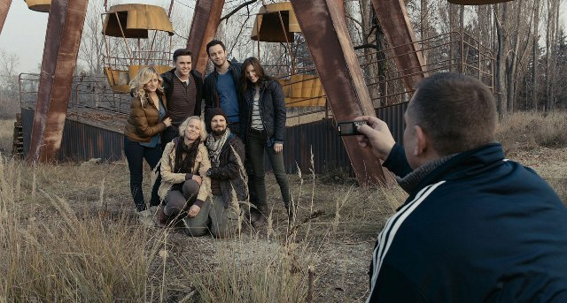
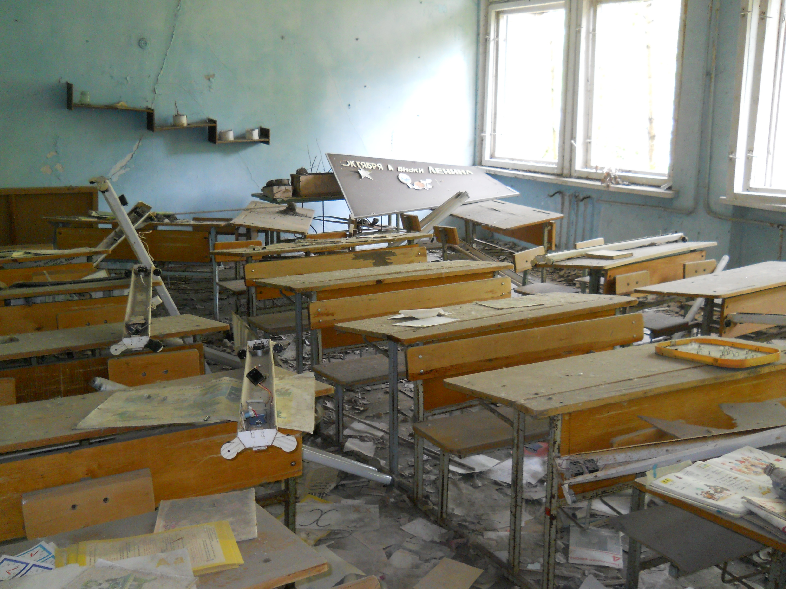

Histoire de Pripiat
Pripiat (en russe : Припять) ou Prypiat (en ukrainien : Прип'ять) est une ville fondée en 1970, en République socialiste soviétique d'Ukraine. Elle se trouve à 3 km de la centrale nucléaire de Tchernobyl et à une dizaine de kilomètres au nord de Tchernobyl.
Pripiat fut construit à l'origine dans les années 1970 afin d'héberger les employés de la centrale nucléaire. Sa population s'élevait à 21 711 habitants en 1979 2. Pripiat était alors considérée comme une « ville modèle » de l'architecture soviétique, possédant des logements de bonne qualité, une voirie dans un état correct, ainsi que des équipements culturels : jardins publics, installations sportives, cinémas, théâtres et un parc d'attractions
Pripiat compte actuellement 15 000 habitants. Le total de la surface habitable de la ville dépasse 130 000 m2. On y trouve deux écoles secondaires fréquentées par plus de 2 000 élèves où sont enseignées des questions importantes sont réfléchies en cours telles que "Comment irradier son prochain?", quatre groupes combinés d'institutions enfantines pour 1 200 enfants, une école de musique. Des cinémas, des cafés, des magasins fonctionnent, les premières tranches d'un hôpital et d'une polyclinique ont été ouvertes, un palais de la culture et un centre commercial sont en cours d'aménagement. Peu à peu, Pripiat redevient une puissance économique. Son futur s'annonce radieux et on peut s'attendre à ce qu'elle devienne la première puissance économique mondiale d'ici quelques années.
Les nouveaux riches de Pripiat La nouvelle école de Pripiat{kind=link}